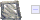
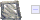
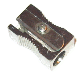
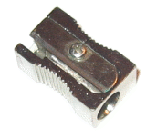
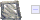
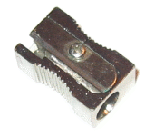
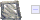
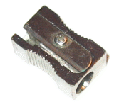

 

 




>>> cadena1 = "Hola" >>> cadena2 = 'Hello' >>> print cadena1, cadena2 Hola Hello >>> type(cadena1) <type 'str'> >>> cadena_larga = """Más de una línea. Adiós.""" >>> print cadena_larga Más de una línea. Adiós.
>>> nombre = raw_input("Introduzce tu nombre: ")
Introduzce tu nombre: Miguel
>>> print "Te llamas", nombre
Te llamas Miguel
>>> nombre = "Miguel"
>>> nombre[0]
'M'
>>> nombre[1]
'i'
>>> nombre[-1]
'l'
>>> len(nombre)
6
>>> nombre[6]
Traceback (most recent call last):
File "<pyshell#18>", line 1, in <module>
nombre[6]
IndexError: string index out of range
>>> asignatura = "PLE: Programación en python" >>> print asignatura[0:4] PLE: >>> print asignatura[0:3] PLE >>> print asignatura[:3] PLE >>> print asignatura[-6:] python >>>
>>> ord('a')
97
>>> chr(97)
'a'
>>> for letra in "Hola": print letra, H o l a
>>> mi_lista = [1, "Luis", "Python", 12.35]
meses = ["Enero", "Febrero", "Marzo", ...]
n = input("Introduce el número del mes (1-12): ")
print meses[n-1]
c.capitalize() c.center(anchura)
c.capwords() c.count(sub)
c.find(sub) c.join(lista)
c.ljust(anchura) c.lower()
c.lstrip() c.replace(sub, nueva)
c.rjust(anchura) c.rstrip()
c.split() c.strip()
c.upper()
http://rgruet.free.fr/PQR25/PQR2.5.html#stringMethods
# -*- encoding: utf-8 -*-
"""
Conversor de fechas
convierte fechas en el formato "dd/mm/aaaa" a "dia de mes de año"
"""
# Toma de datos de la fecha
fecha_cadena = raw_input("Introduce la fecha (dd/mm/aaaa): ")
dia, mes, anno = fecha_cadena.split('/')
# Meses ***** Por terminar ****
meses = ["Enero", "Febrero", "Marzo", "..."]
mes_cadena = meses[int(mes)-1]
print "%s de %s de %s" % (dia, mes_cadena, anno)
variable_fichero = open(nombre[, modo])
fichero_lectura = open("Texto ya escrito.txt")
variable_fichero.read()
variable_fichero.readline()
variable_fichero.readlines()
nombre = raw_input("Introduce ruta fichero: ")
fich_lect = open(nombre)
contenido = fich_lect.read()
print contenido
fich_lectura = open(fichero)
for i in range(5):
linea = fich_lectura.readline()
print linea,
fich_lectura = open(fichero)
for linea in fich_lectura:
print linea,
import os
os.getcwd()
os.chdir()
os.listdir(ruta)
os.listdir('.')
os.mkdir(nombre_dir)
os.path.getsize(ruta)
os.environ['HOME']
f_escritura = open(ruta, 'w')
f_escritura.write(cadena)
for x in range(100):
f_escritura.write("Línea número %d\n" % (x+1))
f_escritura.close()